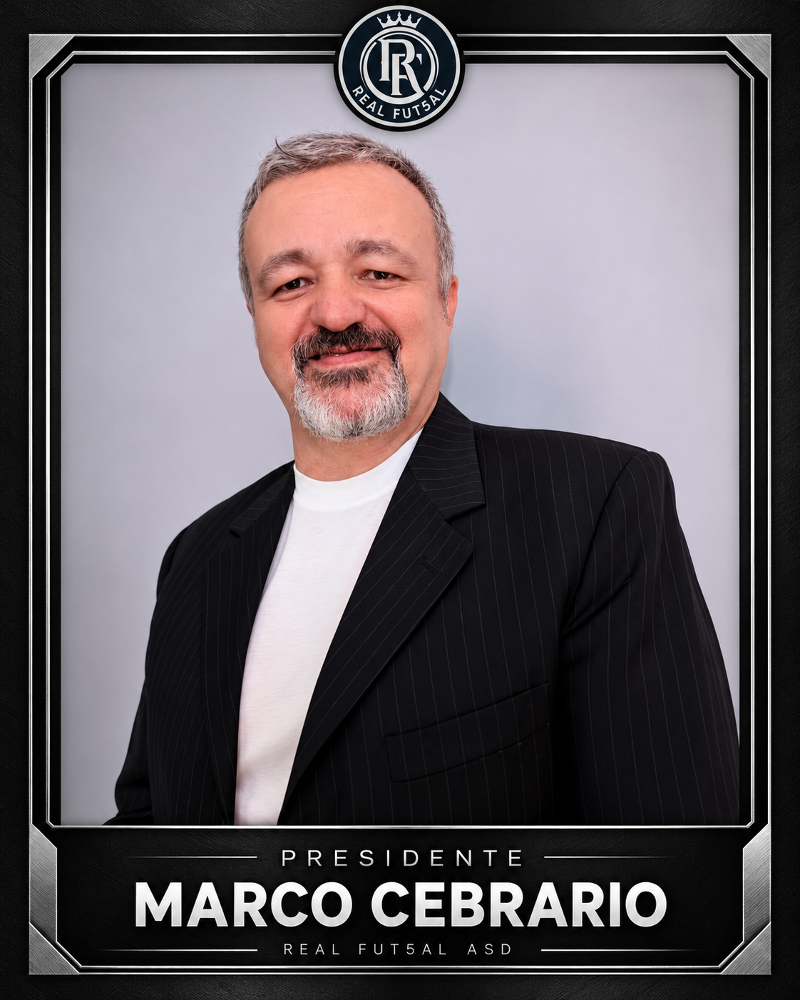

La società Real Fut5al ASD comunica che, in data 6 ottobre 2026, si è costituito il nuovo Consiglio Direttivo, composto da cinque membri, che guiderà la società nel corso della stagione sportiva 2026/2027.
Il nuovo Consiglio Direttivo
- Presidente: Marco Cebrario
- Consigliere - Rappresentante degli Atleti: Sebastiano Walter Quintessenza
- Consigliere – Rappresentante dei Tecnici: Pier Paolo Brivio
- Consigliere: Giorgio Vicini
- Consigliere: Raul Gojanovic
La società desidera inoltre rivolgere un pensiero speciale e riconoscente a due persone che hanno scritto pagine importanti della storia del Real Fut5al e che continueranno a rappresentarne un punto di riferimento morale e storico:
Fondatore: Luca Toniolo
Cavaliere: Gianfranco Conti
Due figure care alla famiglia Real Fut5al, alle quali va il nostro sincero ringraziamento per il contributo, la dedizione e il legame costruito con la società nel corso degli anni. Nel segno del rispetto e della riconoscenza, i loro nomi rimangono legati in modo indelebile alla storia e ai valori del club.
Nei prossimi giorni saranno presentati ufficialmente l’organigramma dirigenziale, lo staff sportivo e tecnico e, successivamente, la rosa degli atleti che rappresenteranno il Real Fut5al nelle competizioni della FSSI – Federazione Sport Sordi Italia e della DCL – Champions League Deaf.
Si apre così un nuovo capitolo per la nostra società, con l’obiettivo di affrontare la stagione con entusiasmo, determinazione, spirito di squadra e orgoglio.
Un grande in bocca al lupo al nuovo Consiglio Direttivo, allo staff e a tutti gli atleti per la stagione sportiva 2026/2027! 🖤